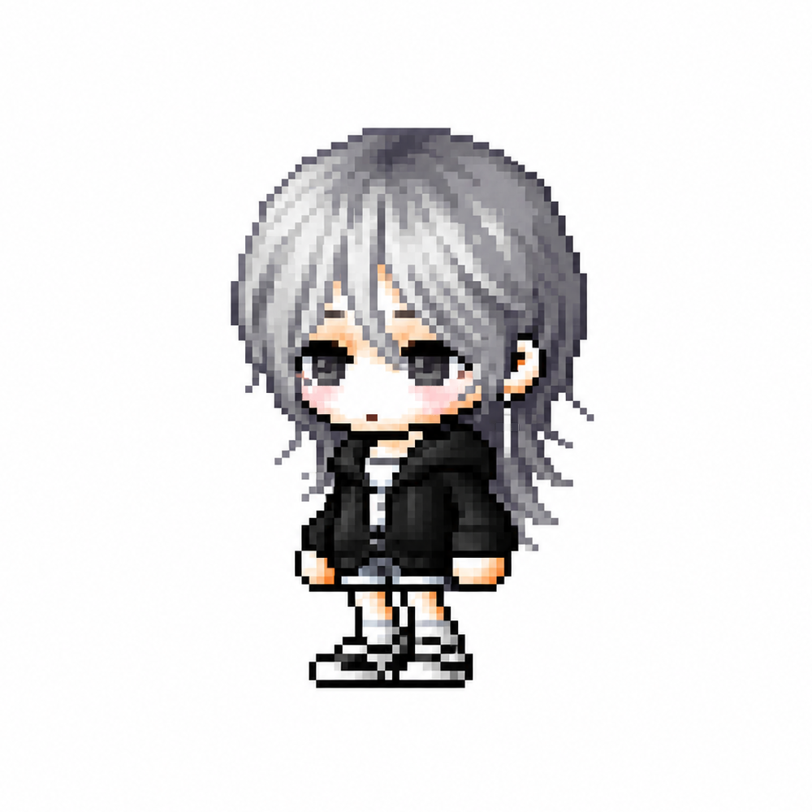
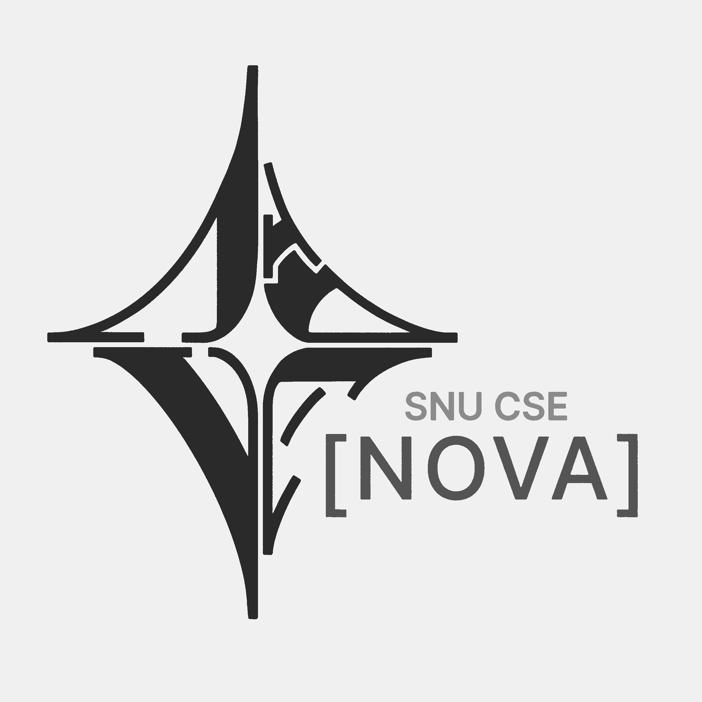
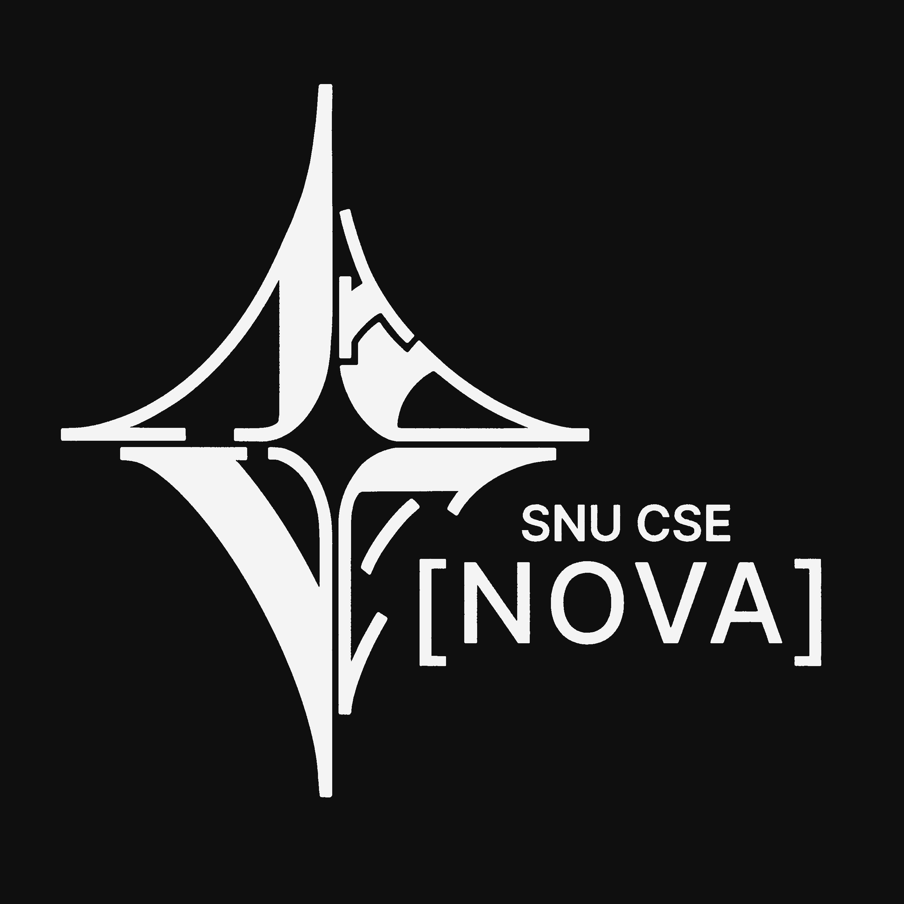
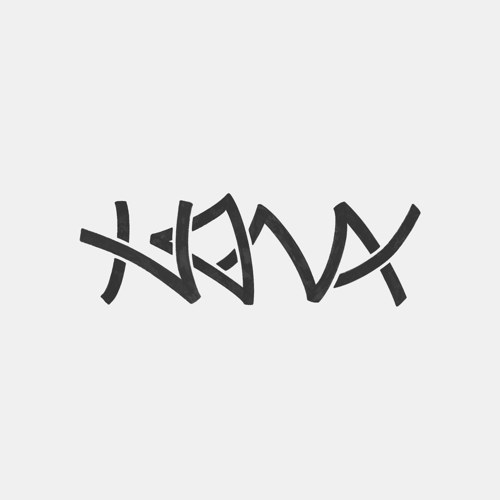
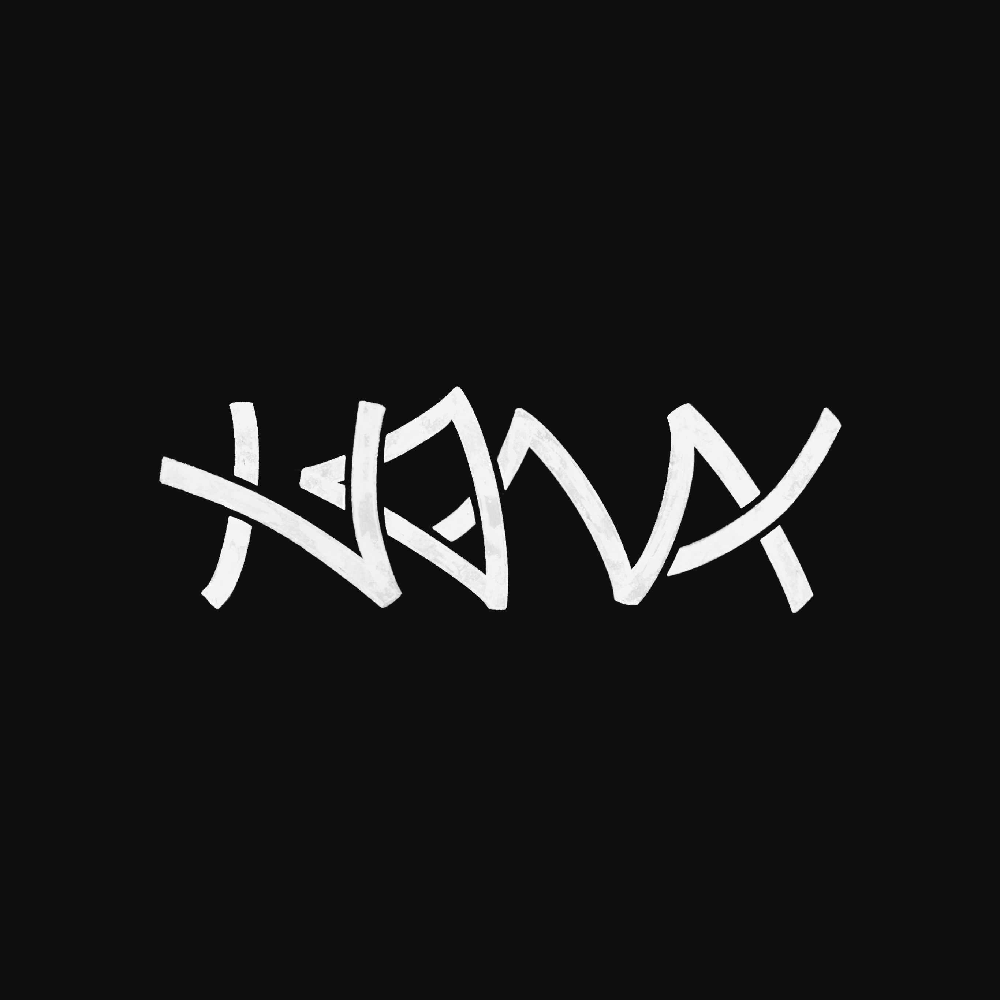

About Me

Hi, I am Dasom Lim, an undergraduate student majoring in Computer Science and Engineering at Seoul National University.
I work between code and design. As Director of Design & Promotion for the 38th Student Council of CSE (NOVA) and Director of the Design Team for COMSEE 2026, I create visual identities and promotional materials, from logos and pamphlets to merchandise.
I enjoy building what I design, and I want to keep growing in the space where technology and design meet.
Projects & Activities
Director of Design & Promotion, NOVA
I am serving as Director of Design & Promotion for NOVA, the 38th Student Council of the Department of Computer Science and Engineering, College of Engineering, Seoul National University.
I lead the visual design and production of promotional materials for various council activities.


Logo Design of NOVA
Inspired by the Latin for 'new' and the brilliance of a supernova, I crafted NOVA’s identity to embody its radiant energy.
The logo features a radiant diamond motif—a geometric synthesis meticulously architected from the structural forms of the four letters: N, O, V, and A.




Resume
Education
Seoul National University
Undergraduate in Computer Science and Engineering
Skills
Programming
Design Tools
Experience
Aug 2026 – Sep 2026
Director of the Design Team, COMSEE Special Committee, SNU CSE
Dec 2025 – Nov 2026
Director of Design & Promotion, [NOVA] 38th Student Council, SNU CSE
2025
Member of Design & Promotion Team, [FLOW] 37th Student Council, SNU CSE